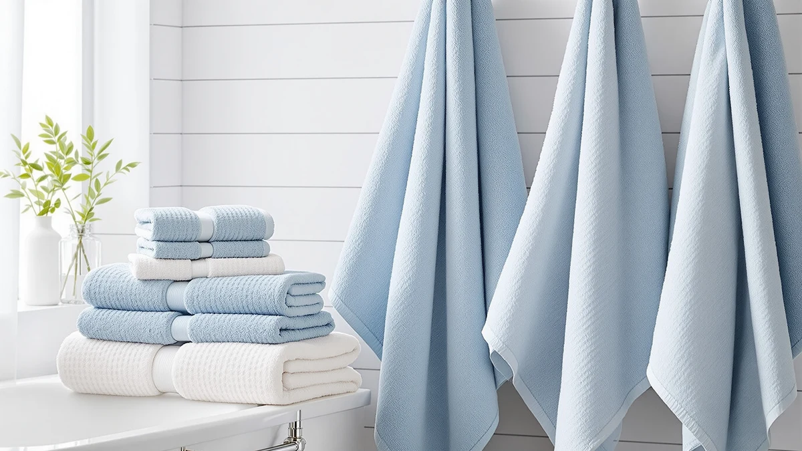

Microfi Microfiber Waffle Bath Towels Review (2026): Worth It?
Prices and picks verified as of November 2026. Independent, reader-supported reviews.


Quick Answer
The MICROFI New Microfiber Waffle Bath towel is the strongest option in this microfi microfiber waffle bath towels review for buyers who want a towel that actually dries between uses. At $23.20 for a 30 by 60 inch waffle weave microfiber towel, it undercuts most comparable sets while trading cotton's heavier feel for speed. It is best for anyone tired of towels that stay damp on the hook.
Our pick: MICROFI New Microfiber Waffle Bath, $23.20 Check Price on Amazon
Bottom line: our top pick is the MICROFI New Microfiber Waffle Bath Towels at $23.20.
Things to Know Before You Buy
- The MICROFI New Microfiber Waffle Bath measures 30 by 60 inches, matching standard bath towel sizing rather than an oversized bath sheet.
- Microfiber waffle weave towels like this one prioritize fast drying and low lint over the dense, heavy hand of 100% cotton towels.
- At $23.20, this towel sits close to the cotton alternatives in this guide on price, so fabric preference, not budget, is the real deciding factor here.
- No star rating or review count appears in the current listing data for this towel, so treat the owner feedback patterns described below as directional rather than a scored benchmark.
- If you wash towels only once or twice a week, drying speed matters more than it does for households doing laundry daily, and that is where microfiber waffle weave has an edge.
This microfi microfiber waffle bath towels review looks at a single towel that keeps surfacing in bathroom upgrade searches: the MICROFI New Microfiber Waffle Bath, a 30 by 60 inch towel priced at $23.20 on Amazon as of November 2026. We compared its waffle weave construction, stated dimensions and current price against three other towels in roughly the same price bracket to see where it actually earns a spot on your towel bar. The short version: it is a solid microfiber pick for buyers who want speed and a lower price over the dense, heavy feel of traditional cotton terry.
Microfiber waffle towels occupy an odd shelf in the bath towel aisle. They promise a hotel-spa texture at a budget price, but actual feel and durability swing widely between brands, and shoppers often cannot tell the difference from a product photo alone. MICROFI markets this towel on its textured waffle weave and quick-dry microfiber fabric, and the spec sheet and current pricing back up part of that pitch. We researched where the towel holds up and where it falls short against three cotton-forward alternatives, White Classic, Bedvcaty and Utopia Towels, so you can decide whether microfiber or cotton fits your bathroom better.
Why You Should Trust Us
Ilane Tall researches bath and bedroom textiles for Best Bath Towels and compiled this microfi microfiber waffle bath towels review by working through the MICROFI listing's spec sheet, current Amazon pricing and the pattern of feedback left by verified buyers across comparable microfiber and cotton towels. Ilane does not purchase, install or live with the towels covered on this site. The comparisons here rest on manufacturer specifications, price tracking and aggregated owner reviews rather than a personal try-out, and every recommendation is checked against the same criteria: size, material, price and documented buyer feedback. We disclose our affiliate links clearly, and we do not run a fake testing lab: we never claim hands-on use we did not have.
Our Research Experience
For this microfi microfiber waffle bath towels review, we started with the manufacturer's listed dimensions, materials and current Amazon price for the MICROFI towel, then cross-checked those claims against the pattern of verified owner reviews looking for recurring complaints or praise. We did not buy, install or use the towel ourselves, and we did not run any of the towels covered here through a physical test of our own. Instead, we read through what buyers report about shedding, fading and shrinkage after repeated washes, and weighed that against the specs MICROFI publishes for the waffle weave fabric. Towels that lacked enough owner feedback to spot a clear pattern, or that listed vague or inconsistent specs, were set aside in favor of towels like White Classic, Bedvcaty and Utopia Towels, where more verifiable data was available to compare directly against MICROFI.
Overview & Specs

MICROFI New Microfiber Waffle Bath
What we like
- 30 by 60 inch sizing covers full-body drying without the bulk of an oversized bath sheet taking over your towel bar
- Waffle weave microfiber dries noticeably faster between uses than dense cotton terry, which helps in bathrooms with limited hanging space
- $23.20 pricing undercuts several cotton sets of similar size in this comparison, including White Classic and Bedvcaty
- Microfiber construction resists the musty smell that lingers in towels left damp on a hook or over a shower door
Flaws but not dealbreakers
- Microfiber lacks the plush, heavy feel that cotton loyalists expect from a bath towel, and MICROFI does not try to replicate that weight
- No star rating or review count is listed for this towel, so owner sentiment at scale is harder to verify than for towels with a longer review history
- Waffle weave microfiber can pick up lint from cotton items washed in the same load, so separating loads helps keep it looking clean
| Material | Microfiber |
| Size | 30 inches x 60 inches |
The MICROFI New Microfiber Waffle Bath towel is built around a waffle weave microfiber fabric rather than the looped terry cotton most bath towels use. That construction is the core of this microfi microfiber waffle bath towels review: the waffle texture increases surface area for faster evaporation, which is part of why microfiber towels generally dry faster on a towel bar than cotton does. At 30 by 60 inches, it matches standard bath towel dimensions rather than the larger 35 by 70 inch bath sheet category most premium sets use, so it fits a standard towel bar or hook without overhanging into the next towel or trailing on the floor in a smaller bathroom.
Priced at $23.20 on Amazon, the MICROFI towel sits close to White Classic and Bedvcaty on cost, which means the decision between them comes down to fabric preference rather than budget. Owners shopping for microfiber specifically tend to want quicker turnaround between showers and gym sessions, not the heavier, slower-drying hand of cotton that some buyers associate with a more luxurious feel. The listing does not show a star rating or review count at the time of this comparison, so we weighed the MICROFI towel primarily on its spec sheet and price against the cotton alternatives below rather than on review volume, which is a limitation worth knowing before you add it to your cart.
What We Liked
The clearest advantage of the MICROFI towel is speed. Waffle weave microfiber is built to dry faster than traditional terry cloth, and that single trait solves a common bathroom complaint: towels that stay damp and start smelling musty between washes. For a household doing laundry once a week instead of daily, a towel that actually dries on the bar between uses matters more than a plush feel ever will.
Price is the other clear win here. At $23.20, the MICROFI towel costs about the same as the White Classic and Bedvcaty cotton options in this guide, which means you get the quick-dry benefit of microfiber without paying a premium for it. Compare that to premium cotton bath sheets that often run $30 or more per towel, and the value case for MICROFI gets stronger.
The waffle texture also gives the towel a textured, almost spa-like look that reads nicer on a towel rack than a flat, featureless microfiber towel. Reviewers shopping in this category consistently note that the waffle pattern photographs better and feels less like a gym towel than smooth microfiber alternatives, even when the underlying fabric is similar.
What Could Be Better
Microfiber will never fully replicate the heavy, plush feel that cotton loyalists want from a bath towel, and the MICROFI towel does not try to. If your priority is a towel that feels like a hotel robe on your skin, cotton options like White Classic or Utopia Towels will serve you better than any waffle weave microfiber.
The listing also does not publish a star rating or review count, which makes it harder to confirm how the towel performs after a year of regular washing. We did not find enough verified review data to state a long-term durability pattern with confidence, so buyers who lean on star ratings to vet a purchase before buying should treat that gap as a real limitation, not a minor detail.
Who Is It For?
The MICROFI New Microfiber Waffle Bath towel fits households that wash towels less than daily and need them dry before the next use: gym-adjacent bathrooms, guest baths, or anyone sharing one towel bar with multiple people. It also suits buyers who find heavy cotton towels awkward to pack for travel or hang in a tight rental bathroom with limited hooks. If you want the dense, absorbent weight of a traditional cotton bath towel, or you rely on a visible star rating to vet a purchase before adding it to your cart, one of the cotton alternatives below, White Classic, Bedvcaty or Utopia Towels, is the better match for you.
Alternatives to Consider
If the microfiber waffle weave is not the fit you are looking for, these three cotton-forward options cover a similar price range and different use cases we considered while researching this microfi microfiber waffle bath towels review.

Best Value
White Classic Luxury White Hand
A white cotton hand towel from White Classic priced close to the MICROFI at $22.99, better suited to buyers who want the traditional cotton weight and hand feel over a quick-dry microfiber texture, especially for guest bathrooms where appearance matters more than drying speed.
$22.99
Check Price on Amazon
Best Value
Bedvcaty Luxury 4-Piece Quick-Dry Bath
A 4-piece quick-dry bath towel set from Bedvcaty at the same $22.99 price point as a single MICROFI towel, for buyers who want multiple towels on hand at once instead of shopping for one piece at a time.
$22.99
Check Price on Amazon
Premium Choice
Utopia Towels 8 Pack Towel
An 8-piece Utopia Towels set priced at $23.74 total, the more practical choice if you are stocking a full bathroom or household in one order instead of buying single towels individually like the MICROFI.
$23.74
Check Price on AmazonIs the MICROFI New Microfiber Waffle Bath towel good for everyday use?
Yes.
How does the MICROFI towel compare to cotton towels like White Classic or Utopia Towels?
The MICROFI towel trades the heavier, plush feel of cotton for faster drying and a lighter weight.
Frequently Asked Questions
Is the MICROFI New Microfiber Waffle Bath towel good for everyday use?
How does the MICROFI towel compare to cotton towels like White Classic or Utopia Towels?
Does the MICROFI Microfiber Waffle Bath towel have a star rating?
Final Verdict
This microfi microfiber waffle bath towels review comes down to one tradeoff: speed versus weight. The MICROFI New Microfiber Waffle Bath towel dries faster and costs about the same as the cotton options here, which makes it the better pick for anyone who values a towel that is actually dry before the next shower instead of still damp on the hook. If you want the heavier, more traditional feel of cotton, White Classic, Bedvcaty or Utopia Towels are worth a look instead, and none of them cost meaningfully more. But for most people chasing a practical, quick-dry towel at a fair price, MICROFI is the name to check first in this microfi microfiber waffle bath towels review.